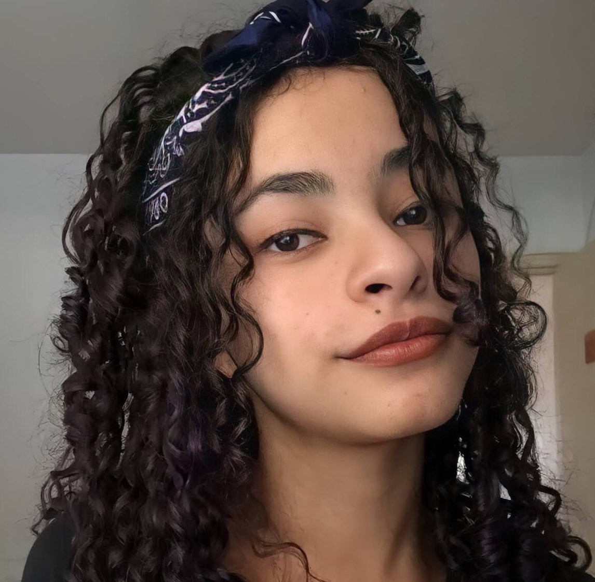

Amanda Fonseca
Desenvolvedora Frontend Júnior


Sobre
Oie! Meu nome é Amanda Silva Fonseca, seja bem-vindo(a)!
Sou uma pessoa que está em constante desenvolvimento
e aprendizagem na área da programação.
Almejo ajudar e alegrar usuários com meus futuros sites e aplicativos!
Atualmente estou estudando HTML, CSS, JavaScript e Kotlin,
também tive contato com C# durante o desenvolvimento de jogos 2D e 3D na Unity.
Meus principais hobbies são ler, jogar jogos online e escutar música.